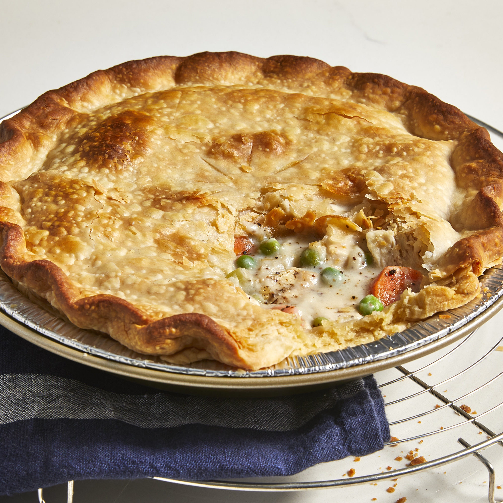

Chicken Pot Pie
Chicken Pot Pie

Description
A delicious chicken pie made from scratch with carrots, peas, and celery in a pre-made crust. Add thyme and poultry seasoning for more flavor.
Ingredients
- Chicken
- Vegetables
- Butter
- Flour
- Seasonings (salt, pepper, celery seed)
- Broth and milk
- Pie crusts
Steps
- Boil the cubed chicken with the carrots, peas, and celery for about 15 minutes. Drain and set aside.
- Cook the onions in butter until they're translucent, then stir in the flour and seasonings.
- Add the chicken broth and milk and simmer until the filling is thick.
- Place the chicken-vegetable mixture in an unbaked pie crust.
- Pour the chicken broth mixture over it.
- Cover with the top crust, seal the edges, and cut slits in the top to allow the steam to escape.
- Bake until the pastry is golden brown and the filling is bubbly.